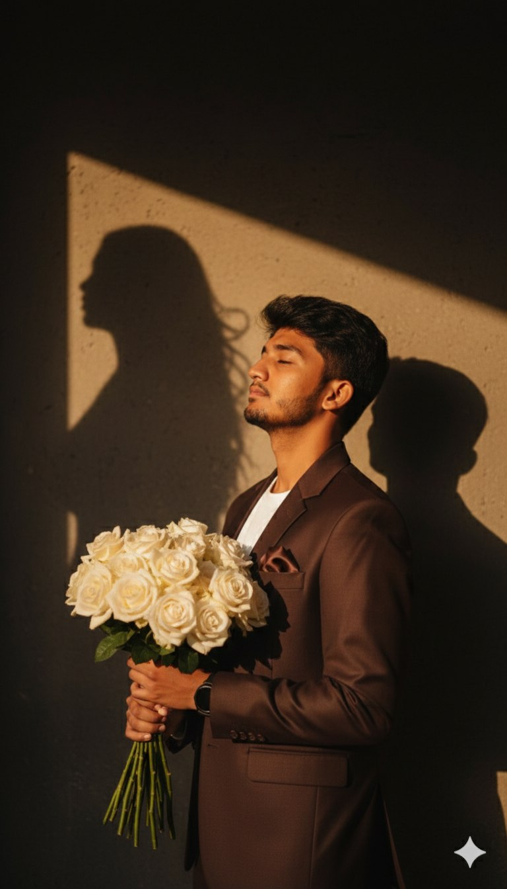

Portrait AI Prompts
Realistic and Artistic Portrait Styles
These portrait AI prompts focus on creating expressive, realistic, and artistic human portraits using AI tools. Ideal for avatars, concept art, and personal projects.

1. Ultra-Realistic Portrait
A cinematic fine art portrait of a young man (based on the provided image) in a Brown tailored suit and pocket square. He holds a bouquet of vibrant White roses in one hand, standing in a dramatic golden sunlight beam against a dark wall. His eyes are closed, expressing serenity and deep emotion. On the wall behind him, the shadow silhouette of a woman appears, symbolizing love, longing, Hair Same As My Uploaded Face And 18K Ultra Realistic 3,394 Portrait Face Tilted Above

2. Cinematic Portrait
Stylish fashion editorial photo of a male model wearing an oversized white sweatshirt and white sweatpants, paired with white sneakers A soft red studio backdrop with soft cinematic lighting, highlighting textures, futuristic editorial stylu, model sitting elegantly, head slightly ited, relaxed posture. Don't change face, image ratio should be 4:5

3. a beautiful girl sleeping /h3>
Subject: me (use uploaded face - 100% facial accuracy, no changes). with no extra brightness on the face, keeping my natural dark facial tone intact. dreamlike, movie-quality augmented reality visual where numerous hovering
Spotify player interface cards orbit the central figure (the person shown), I am sitting, a beautiful girl sleeping, her head on my shoulder in inside train, holding a phone and looking out off camera, relax and calm, leg and leg, subtle smile, in a complete 3D spatial composition, with each music player card
strategically placed at varying distances, some prominently positioned in front and partially covering the subject, while others float behind and alongside them, utilizing the authentic Instagram reels and Music Ul/Spotify UI elements playback progress indicators and featuring songs by [Vedant Zalte ]; all cards display smooth rounded edges with subtle angular perspective shifts, presenting a translucent, frosted-glass aesthetic that radiates a gentle
diffused border luminescence with measured cinematic light bloom
interacting organically with the ambient lighting of the scene; the composition showcases a cool-to-neutral color palette with rich yet preserved shadow detail, strategic bursts of color from album artwork, medium-high contrast
levels with gradual highlight transitions, delicate focal depth variation where nearer cards maintain crisp detail while farther ones receive gentle blur treatment, and understated motion-enhancing accents, all while keeping the subject photorealistic, centrally positioned, and authentically integrated into their physical surroundings. wear white shirt and black pant, wear backpack, white sneakers, realistic crowded train background. closed eyes. midnight, gul
softly blur by Dsir lens quality

4. Watercolor Portrait
Create a hyper-realistic portrait of a man sitting in a cliff a of rock in mountain, (Used reference photo 100% for Face details) the full shot of a man from the side view, with Wavy Farming massy hair, sitting on the edge of a rocky cliff. He is wearing a Black Oversized Hoodie and Brown oversized pants and white sneakers. A rests on the rock beside him. In the full dence misty background, there is a foggy, vast mountain view with a light, overcast sky. High- quality photo, cinematic light, deep shadows and bright highlights.

5.Charcoal Portrait
Close-up in front overall outlook, wet-look portrait. Young men's (keep it real face from uploaded image) face in profile, messy wet hair clinging to skin. Water droplets/sweat glistening on her face. Intense, sharp focus on a bright brown/hazel eye. Moist, glossy lips. Soft, cool-toned lighting against light grey/white bokeh background. Raw, hyper-realistic, high detail keep 100% same face

5. Digital Painting Portrait
A stylish young men taking a mirror selfie, wearing a baby pink loose shirt and white pants, holding the shirt casually with one hand, a stylish hairstyle with long hair realistic lighting, and soft white outline glow around him. The background is a modern grayscale aesthetic collage with elements like electric guitar, headphones, dice, cat face decor, 3D stars, and "flower" graffiti text, Artistic, trendy Instagram-style edit with balanced composition and HD quality

7. Cinematic Portrait Christmas
A hyper-realistic cinematic winter portrait of the person in the uploaded pictures standing at night under falling snow. He wears an ivory-Black coat with a soft scarf wrapped around his neck. One hand is in his coat pocket, the other gently His head is slightly tilted up, eyes half-closed, smiling calmly at the camera. A warm yellow streetlight creates a soft golden glow around him, while snow sparkles against the dark night sky. The street lights behind him are decorated for 8K, vertical 3:4. Christmas Romantic, dreamy winter movie mood. Ultra-detailed, editorial cinematic style, Keep the original face, hair, beard, and overall facial Likes structure exactly as in the uploaded image, without any alteration to expression, proportions, or skin tone

8. Fantasy Elf Portrait
The image contains a prompt for editing a photo, providing detailed instructions for the subject's appearance, clothing, pose, and background design. Action: Edit a photo without changing the face. Subject Details: Elegantly seated on the floor, wearing a modern black shirt, red/soft loose gray jeans, and chunky gray/white sneakers, with voluminous hair and a subtle smile. Background Details: Artistic monochrome composition featuring a soft close-up front profile of the same face, with strong blue and red smoke effects on the floor.Generates magical fantasy elf portraits with intricate details.